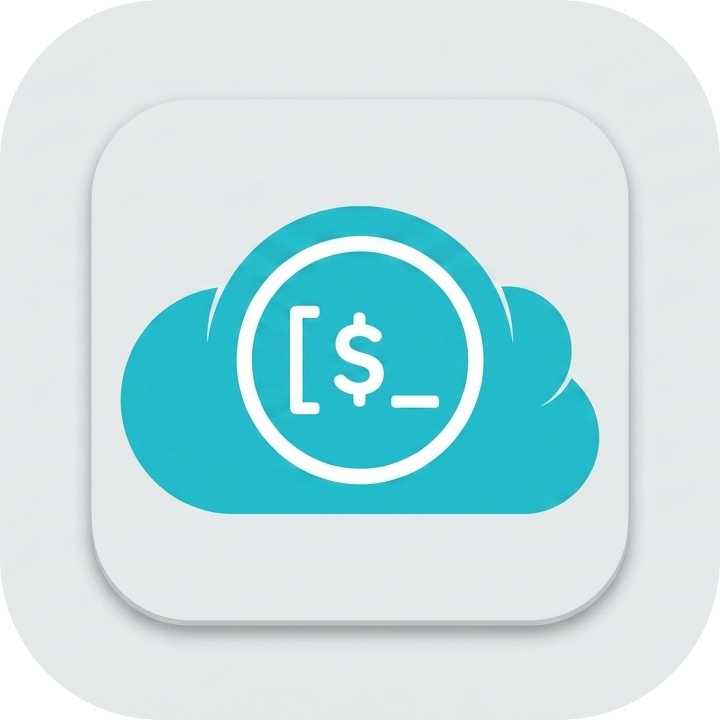

v1.0.0 · MIT
mcp-pcloud
Full pCloud API coverage — manage files, trash, sharing, public links, and version history directly from your AI assistant.
npx @kud/mcp-pcloud
v1.0.0
Latest
27
Tools
MIT
Licence
TS
TypeScript
Why mcp-pcloud
Features
27 tools across 8 categories — the most complete pCloud integration for AI assistants available today.
Full File Management
List folders, stat files, create, copy, move, rename, and delete
— everything you'd do in the pCloud web app, via conversation.
Trash & Recovery
List every deleted file and restore any of them by ID. Safety
confirm=true gates prevent accidental writes.
Rewind & Revisions
Browse rewind history and file revisions, then restore any
previous version to a destination path of your choice.
Sharing & Public Links
Share folders with other pCloud users, manage permissions, and
create or revoke public download links with optional expiry.
Secure Token Auth
Reads your token from
~/.config/pcloud/tokens.json or
MCP_PCLOUD_TOKEN — no credentials in source code.
Universal AI Support
Works out of the box with Claude Code CLI, Claude Desktop,
Cursor, Windsurf, and VSCode via the MCP protocol.
Get going fast
Quick Start
Add the server to Claude Code in one command, then start asking about your files.
# Add to Claude Code CLI
claude mcp add mcp-pcloud -- npx -y @kud/mcp-pcloud
# Or add to Claude Desktop (claude_desktop_config.json)
{
"mcpServers": {
"mcp-pcloud": {
"command": "npx",
"args": ["-y", "@kud/mcp-pcloud"]
}
}
}
# Restart your AI client — pCloud tools appear automatically
✔ mcp-pcloud registered
Available tools
Tool Reference
27 tools across 8 categories covering the full pCloud API surface.
Trash
list_trashList all files in the pCloud trash with IDs, names, sizes, and
deletion dates.
restore_from_trashRestore a file from trash by file ID. Requires
confirm: true.
Rewind
list_rewind_eventsList version history events for a file path.
restore_from_rewindRestore a file from rewind history to a new path. Requires
confirm: true.
User
get_user_infoGet account info: email, quota usage, and plan.
Files
list_folderList the contents of a folder by path or folder ID.
get_file_statGet metadata for a file or folder.
create_folderCreate a folder (no-op if it already exists).
copy_fileCopy a file to a new path.
move_fileMove a file to a new path.
rename_fileRename a file.
delete_filePermanently delete a file. Requires
confirm: true.
delete_folderRecursively delete a folder and all its contents. Requires
confirm: true.
get_file_linkGet a download URL for a file.
get_checksumGet SHA256, SHA1, and MD5 checksums for a file.
Sharing
list_sharesList all active folder shares.
share_folderShare a folder with another pCloud user with permission
control.
accept_shareAccept an incoming share request.
decline_shareDecline an incoming share request.
remove_shareRemove an active share. Requires
confirm: true.
Public Links
create_file_publinkCreate a public download link for a file with optional expiry
and download limit.
create_folder_publinkCreate a public link for a folder.
list_publinksList all active public links.
delete_publinkDelete a public link by code. Requires
confirm: true.
Zip
get_zip_linkGet a download URL for a ZIP archive of selected files and
folders.
Revisions
list_revisionsList all revisions for a file.
revert_revisionRevert a file to a previous revision. Requires
confirm: true.
Configuration
Authentication
The server resolves your pCloud token automatically — no manual setup needed if you use the config file.
| Key | Type | Default | Description |
|---|---|---|---|
MCP_PCLOUD_TOKEN |
env var | — |
pCloud bearer access token. Takes priority over the config file. |
~/.config/pcloud/tokens.json
|
file | — |
JSON file with access_token and optional
hostname fields.
|
hostname |
string | api.pcloud.com |
API hostname. Use eapi.pcloud.com for EU
accounts.
|